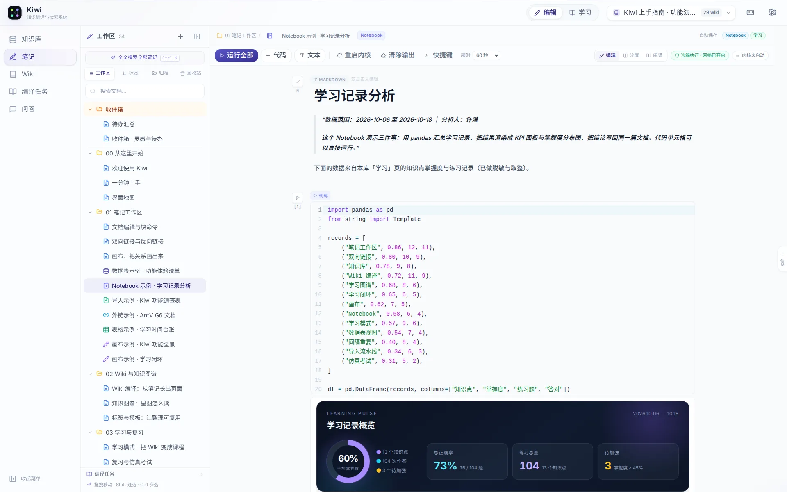
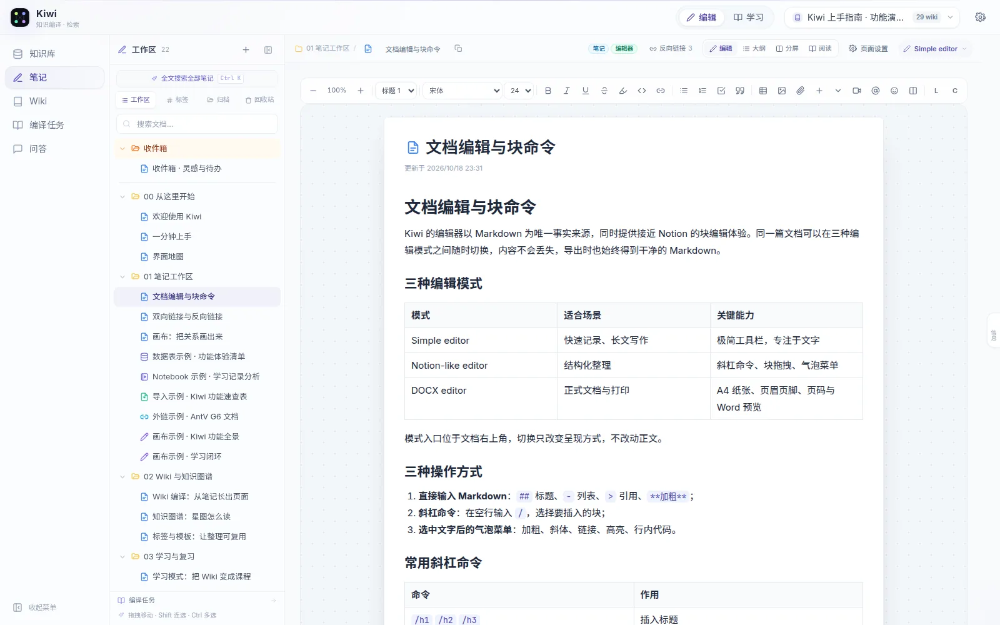
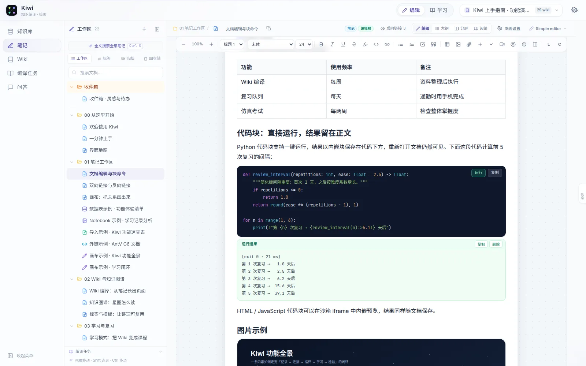
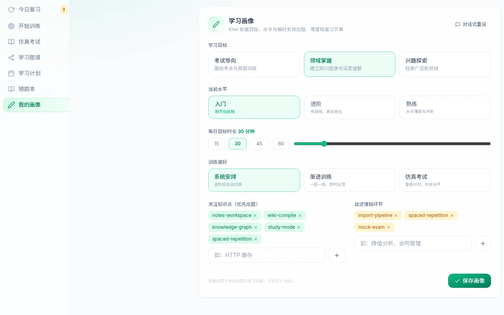
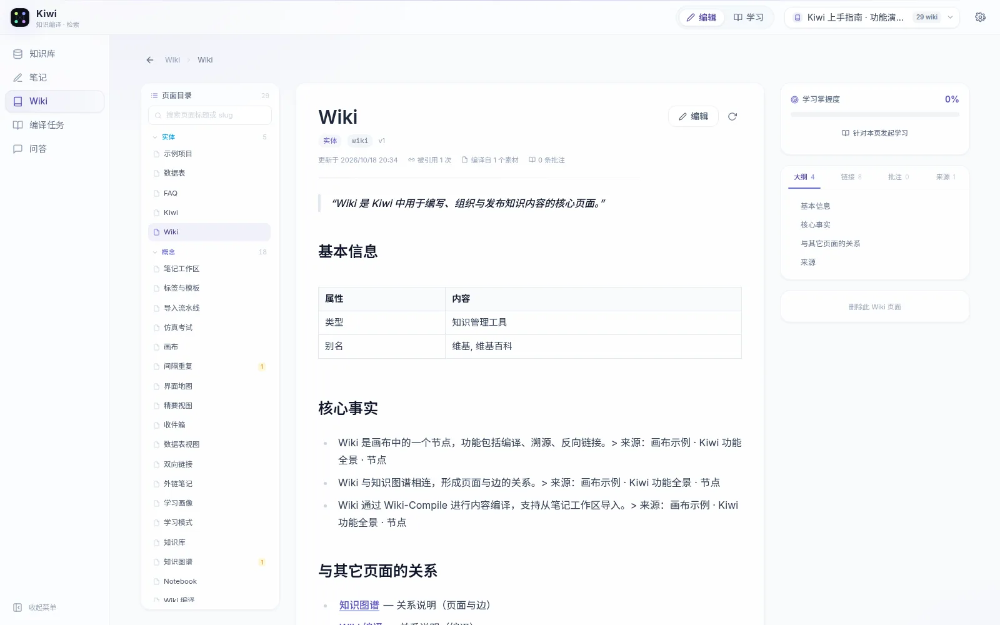

LOCAL-FIRST · KNOWLEDGE COMPILER
把笔记，编译成
你真正学会的知识。
Kiwi 把文档、网页、数据表与画布编译成相互引用的 Wiki；同一份内容可在三种编辑模式间切换，代码块直接运行，再用计划与仿真考试把「读过」变成「掌握」。
- 3种编辑模式
- 6种笔记形态
- 5步学习闭环
- 100%数据留在本机

HOW IT WORKS
从记录到掌握，
中间隔着一整条流水线。
收藏不会让人变聪明。Kiwi 把内容拆开、重新组织、建立连接，再用学习行为持续校准你对它的理解。
-
01
采集
文档、PDF、网页、数据表、画布与 Notebook，都可以是原料。
-
02
编译
Schema 抽取概念、合并页面、保留来源；增量更新，不必推倒重来。
-
03
连接
双向链接与引用关系汇成知识星图，结构自己长出来。
-
04
掌握
计划、练习、间隔重复与仿真考试，把理解沉淀成可度量的掌握度。
THREE EDITORS · ONE DOCUMENT
一份内容，
三种写法。
不是三套割裂的编辑器，而是同一份 Markdown 的三种呈现。写作、整理与交付，各取所需，随时切换，内容不会丢。

RUNNABLE NOTES
代码块不是插图，
输出会真的运行。
在笔记与 Notebook 里写 Python，交给后端 bubblewrap 沙箱执行；结果以内嵌块写回正文，下次打开仍在。HTML / JS 则在隔离 iframe 中即时预览。
-
Python 真执行
运行真实 Python，而不是只给代码上色；输出、退出码与耗时一起回写。
-
结果就是正文
运行结果作为独立结果块持久化，重新打开笔记仍然可查、可复制。
-
HTML / JS 即时预览
前端代码在隔离 iframe 中渲染，交互原型、图表和演示随手可看。

kiwi-output 块写入正文，退出码与耗时一并保留。第 2 周留存分析
按注册周拆分 cohort，观察第 1–4 周留存，并把结论写回知识库。
import pandas as pd
from kiwi import dataset
df = dataset.load("signups.csv")
cohort = (df.groupby(["week", "retained"])
.size()
.unstack())
cohort.plot(kind="line", marker="o")第 2 周起曲线趋稳，说明 onboarding 有效；W4 的二次下滑集中在「未导入素材」用户，已生成待办并引用到 Wiki。
NOTEBOOK · EXECUTABLE ANALYSIS
分析跑在页面里，
结论留在知识里。
Notebook 把代码、图形和结论放在同一页。每个笔记拥有独立内核与持久工作区，运行结果不会随着刷新消失；值得留下的结论，随知识库一起编译进 Wiki。
-
持久工作区
内核状态、代码单元与输出一起保存，重新打开接着跑。
-
图形化输出
图表、富文本与表格直接渲染，而不是一大段纯文本日志。
-
结论可编译
分析结论写进笔记，与文档、画布一起成为 Wiki 的原料。
LEARNING LOOP · MEASURED MASTERY
学习不是打卡，
是一条会回写的闭环。
画像决定起点，计划安排节奏，训练与考试产生证据，掌握度再回写到每个知识点。每一次作答，都会改变下一次出题。

- SM-2按遗忘曲线安排复习
- 7 种客观与主观题型
- 29演示库知识点
- 100%掌握度可追溯
INTERFACE
编辑与学习，
是同一个知识库的两面。
左边组织与编译，右边练习与检验。所有视图共享同一份内容与掌握度。

GET STARTED
十分钟，
搭起自己的知识库。
一条命令启动，首次运行自带完整演示知识库。生产环境可用 Docker 一键部署。
- ✓本地运行，无需注册与订阅
- ✓内置 22 篇演示笔记与 29 个 Wiki 页面
- ✓模型可替换，兼容 OpenAI 协议
$ git clone https://github.com/LsWGG/Kiwi.git
$ cd Kiwi
$ ./run.sh
→ Web http://localhost:5173
→ API http://localhost:8000
→ 状态 演示知识库已就绪$ git clone https://github.com/LsWGG/Kiwi.git
$ cd Kiwi
$ ./deploy.sh
→ Web http://<host>:18473
→ API 127.0.0.1:18474
→ 状态 数据卷已创建，迁移完成需要 Python 3.12 / Node.js 20+ / Docker；首次摄入会下载本地嵌入模型。
FAQ
在开始之前。
Kiwi 和普通笔记软件有什么不同？
普通工具帮你记录；Kiwi 把内容编译成结构化 Wiki，再通过学习闭环持续更新掌握度。目录由 Schema 与引用关系生成，知识点之间不是孤立的，学习结果也会回写到页面。
三种编辑模式有什么区别？
Simple editor 专注纯文本与 Markdown 快捷格式；Notion-like editor 以块为单位，支持拖拽、斜杠命令与气泡菜单；DOCX editor 提供接近文档软件的纸张视图与排版工具。三者编辑的是同一份 Markdown，随时切换，内容不会丢失。
Notebook 和可执行代码块有什么区别？
可执行代码块适合在文档里随手验证一段脚本，输出会以内嵌块留在正文；Notebook 则是一个完整的分析工作区，拥有持久内核、多个代码单元、图形化输出与结论区，适合需要反复运行和调整的数据分析。两者都在隔离沙箱中执行，结论都可以继续编译进 Wiki。
部署环境跑不动本地向量模型怎么办？
在「设置 → 向量模型」切换到线上接口，填写任意 OpenAI 兼容的 Base URL、密钥与模型名，测试连接后保存即可。密钥加密存储，也可以继续用环境变量作为兜底；切换模型会使用独立的向量空间，已有素材建议重新导入。
需要订阅或联网吗？
不需要订阅，也没有账户。Kiwi 在你自己的机器上运行，模型使用任意 OpenAI 兼容接口；仅在首次下载嵌入模型和调用模型时需要网络。
我的数据存在哪里？
PostgreSQL 保存笔记与学习数据，Qdrant 保存向量，上传文件与 Notebook 工作区落在本地磁盘。Docker 部署时全部位于命名卷，重建容器不会丢失。
支持多人协作吗？
Kiwi 目前面向单用户、本地优先的场景，没有内置登录体系。若要暴露到公网，建议在前置反向代理上增加认证与 TLS。
后续如何升级？
拉取最新代码后重新运行启动脚本即可。Docker 部署会在后端启动时自动执行数据库迁移，持久化数据卷保持不变。